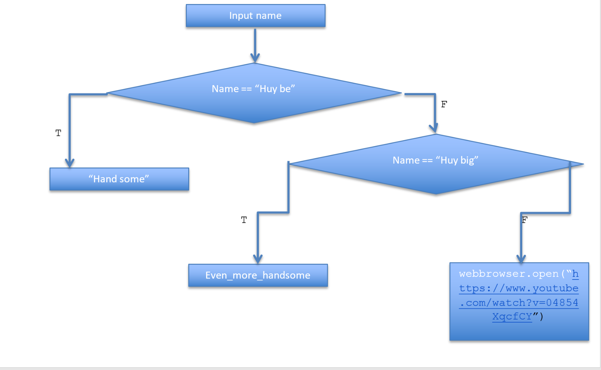

Lưu đồ (Flowchart) là một loại sơ đồ biểu diễn một thuật toán hoặc một quá trình,
biểu hiện các bước công việc dưới dạng các loại hình hôp khác nhau theo thứ tự được biểu diễn bởi các mũi tên.
Sơ đồ này có thể thể hiện giải pháp cho vấn đề cần giải quyết từng bước từng bước một.
Các bước quá trình được hiển thị dưới dạng các hình hộp được nối với nhau bằng các mũi tên để thể hiện dòng điều khiển.
Dòng dữ liệu thường không được thể hiện trong lưu đồ, không giống như trong lưu đồ dòng dữ liệu; thay vào đó, dữ liệu được ẩn vào trong chuỗi các hành động.
Lưu đồ được dùng trong phân tích, thiết kế, phân loại hoặc quản lý công việc hoặc chương trình trong nhiều lĩnh vực khác nhau.
